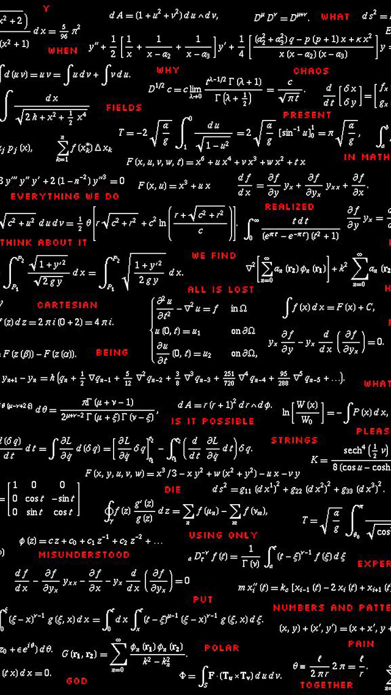
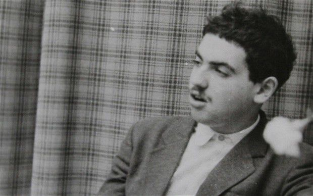

Григорий Яковлевич Перельман
Григорий Перельман родился 13 июня 1966 года в Ленинграде в еврейской семье. Его отец Яков Наумович был инженером-электриком,1993 году эмигрировал в Израиль.Мать, Любовь Лейбовна Штейнгольц, осталась в Санкт-Петербурге, работала учителем математики в ЛМТТ (Ленинградском механико-технологическом техникуме).Именно мать, игравшая на скрипке, привила будущему математику любовь к классической музыке. У Григория Перельмана есть младшая сестра Елена (род. 1976), также математик, выпускница Санкт-Петербургского университета (1998), в 2003 году защитившая диссертацию доктора философии (PhD) в Институте Вейцмана в Реховоте; с 2007 года работает программистом в Стокгольме.

Перельман в юном возрасте
До 9 класса Перельман учился в средней школе на окраине Ленинграда, а потом перевёлся в 239-ю физико-математическую школу. Он хорошо играл в настольный теннис, посещал музыкальную школу. Золотую медаль не получил только из-за физкультуры, не сдав нормы ГТО. С 5 класса Григорий занимался в математическом центре при Дворце пионеров под руководством Сергея Рукшина (ныне профессора РГПУ, народного учителя России), чьи ученики завоевали множество наград на математических олимпиадах. В 1982 году в составе команды советских школьников завоевал золотую медаль на Международной математической олимпиаде в Будапеште, получив полный балл за безукоризненное решение всех задач.
Был без экзаменов зачислен на математико-механический факультет Ленинградского государственного университета. Побеждал на факультетских, городских и всесоюзных студенческих математических олимпиадах. Все годы учился только на «отлично». За успехи в учёбе получал Ленинскую стипендию. Окончив с отличием университет, поступил в аспирантуру (научный руководитель — А. Д. Александров) при Ленинградском отделении Математического института им. В. А. Стеклова АН СССР (ЛОМИ — до 1992 г.; затем — ПОМИ). Защитив в 1990 году кандидатскую диссертацию на тему «Седловые поверхности в евклидовых пространствах», остался работать в институте старшим научным сотрудником.
В начале 1990-х годов приехал в США, где работал научным сотрудником в разных университетах. В 1996 году вернулс в Санкт-Петербург, продолжив работать в ПОМИ, где в одиночку трудился над доказательством гипотезы Пуанкаре. В 2002—2003 годах опубликовал в Интернете три свои знаменитые статьи, в которых кратко изложил оригинальный метод доказательства гипотезы Пуанкаре.
В декабре 2005 года Перельман ушёл с поста ведущего научного сотрудника лаборатории математической физики, уволился из ПОМИ и практически полностью прервал контакты с коллегами. Свою позицию он объяснил несогласием с организованным математическим сообществом и несправедливостью принимаемых ими решений.
Награды и премии:
1. Премия Молодому математику Ленинградского математического общества.
2. Премия Европейского математического общества (1996 г., отказался)
3. Лауреат Филдсовской премии (2006 г., отказался)
4. Лауреат премии тысячелетия математического института Клэя (2010 г., отказался)
Научный вклад:
1. Доказал несколько ключевых утверждений в александровской геометрии пространств ограниченной снизу кривизны.
2. доказал гипотезу о душе в дифференциальной геометрии.
3. доказал гипотезу Пуанкаре и гипотезу геометризации.
Отказ от премии:
В марте 2010 года Математический институт Клэя присудил Григорию Перельману премию в размере одного миллиона долларов США за доказательство гипотезы Пуанкаре, что стало первым в истории присуждением премии за решение одной из Проблем тысячелетия. В июне 2010 года Перельман проигнорировал математическую конференцию в Париже, на которой предполагалось вручение «Премии тысячелетия» за доказательство гипотезы Пуанкаре, а 1 июля 2010 года публично заявил о своём отказе от премии,мотивировав это следующим образом:
Я отказался. Вы знаете, у меня было очень много причин и в ту, и в другую сторону. Поэтому я так долго решал. Если говорить совсем коротко, то главная причина — это несогласие с организованным математическим сообществом. Мне не нравятся их решения, я считаю их несправедливыми. Я считаю, что вклад в решение этой задачи американского математика Гамильтона ничуть не меньше, чем мой.
Данный сайт является продуктом информационно-познавательного проекта, обучающегося 9-1 класса.